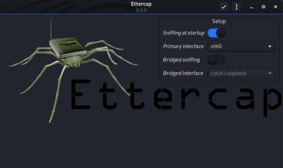

Ettercap
Ettercap is an open source program that sniff packets for different
protocols (POP/HTPPS/HTTPS/SFTP), but it also have password cracking features.
apt-get install ettercap-graphical #installation
Before run
Ettercap we have to enable the
Linux Kernel IP Forwarding, a feature that transforms a Linux machine
into a proxy between the victim machines.
In this way we will able to receive packets intercepted and forward
them to the real destination
echo 1 > /proc/sys/net/ipv4/ip_forward
GUI interface
Let be the
Bridged sniffing option disabled, Bridged mode can be used when the
attacker has multiple networking devices(interfaces), and is sniffing as traffic crosses a bridge from one device to
another.
See the connection intercepted →
→
Find Alive Hosts1.
→
→
or
2.
(Host List)